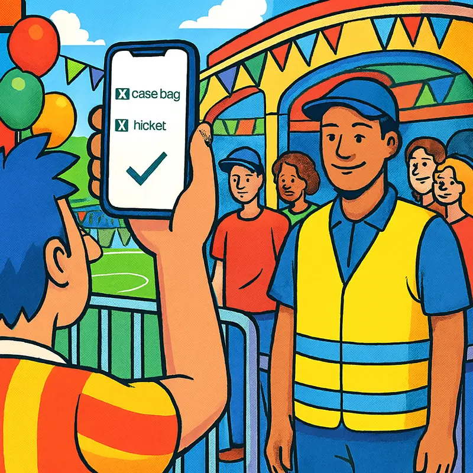

Votre guide personnel des journées de match du tournoi de football 2026.
WC26 Travel Companion met dans votre poche les 104 matchs, les 16 stades répartis dans 3 pays, les cartes GPS des stades, les programmes de journée de match et les outils de voyage indispensables — entièrement hors ligne, sans aucune collecte de données.
Aperçu de l'app
Pensé pour chaque étape de votre journée de match
De la préparation à la maison à la navigation dans une ville étrangère le jour du match — découvrez comment de vrais supporters utilisent l'app.





Tout ce qu'il faut, rien de superflu
Huit outils conçus pour la journée de match — pas de flux sociaux, pas de pubs, pas de comptes.
🏟️ Calendrier complet des matchs
Les 104 matchs — 72 de phase de groupes et 32 de phases finales — avec les vrais sites, dates et heures de coup d'envoi aux États-Unis, au Mexique et au Canada.
📋 Programme de journée de match personnel
Ajoutez vos billets avec porte, section et siège. Recevez un programme étape par étape : quand partir, arriver et entrer dans le stade.
🔔 Rappels de match intelligents
Notifications locales automatiques — 1 jour avant et 2 heures avant le coup d'envoi. Programmées sur l'appareil, sans serveur.
📍 Localisateur de stades GPS
« Autour de moi » utilise le GPS de votre appareil pour afficher votre position en direct à côté des 16 stades sur une carte MapKit interactive avec distances en temps réel.
🚫 Guide des objets interdits
Liste catégorisée des objets interdits et autorisés au contrôle de sécurité des stades — vérifiez avant de faire vos bagages, pas au portail.
🆘 Contacts d'urgence
Numéros de police, hôpitaux et consulats organisés par chacune des 16 villes hôtes des trois pays. À un geste.
💱 Devises et pourboires
Référence rapide pour USD, CAD et MXN avec les usages locaux du pourboire — indispensable quand on franchit les frontières entre pays hôtes.
🗣️ Phrases pour la journée de match
Phrases espagnoles indispensables pour Mexico, Guadalajara et Monterrey — transport, nourriture, stade et urgences, avec prononciation.
Comment ça marche
Cinq étapes du téléchargement à la journée de match.
Fonctionne entièrement hors ligne
Le Wi-Fi des stades n'est pas fiable. L'itinérance internationale coûte cher. C'est pourquoi chaque fonctionnalité de WC26 Travel Companion fonctionne sans aucune connexion Internet. Calendriers, cartes, programmes, contacts d'urgence, devises et phrases sont intégrés dans l'app. Vos données de match sont stockées localement sur votre appareil via le framework SwiftData d'Apple. Sans compte. Sans pub. Sans suivi. Aucune donnée ne quitte votre téléphone.
Questions fréquentes
L'app nécessite-t-elle une connexion Internet ?
Non. Tous les calendriers, données de stades, cartes et outils fonctionnent entièrement hors ligne. Les fonctions de localisation utilisent uniquement le GPS de l'appareil.
L'app collecte-t-elle des données personnelles ?
Non. Aucune collecte de données. Consultez notre Politique de confidentialité.
Et les données de localisation ?
La localisation est traitée sur l'appareil uniquement pour afficher votre position sur la carte. Elle n'est jamais enregistrée ni transmise.
Les horaires des matchs sont-ils dans mon fuseau horaire ?
Oui. Tous les coups d'envoi sont stockés en horodatage UTC absolu et affichés automatiquement dans le fuseau horaire actuel de votre appareil.
Puis-je désactiver les notifications ?
Oui. Vous pouvez refuser l'autorisation de notification à la demande, ou la désactiver plus tard dans Réglages iOS → WC26 Travel Companion → Notifications.
Quelle version d'iOS est requise ?
iOS 17.0 ou ultérieur. L'app est construite avec SwiftUI, SwiftData, MapKit, CoreLocation et UserNotifications — tous des frameworks Apple natifs.
Comment contacter l'assistance ?
Écrivez à wangning.engineer@outlook.com. Le délai de réponse habituel est de 24 à 48 heures.
Télécharger l'app
WC26 Travel Companion est disponible sur l'App Store pour iPhone et iPad.